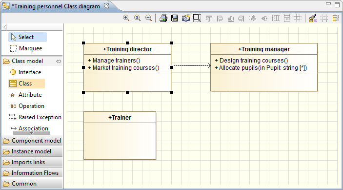

To select an element in a diagram, simply click on it using the left mouse button.
When an element has been selected, it is surrounded by control points.

To select several elements in a diagram, you can either:
or:
When working in a diagram, you may want to be able to jump to a specific element in the “Model” view, without having to manually select it.
To do this, just right-click on the element in the diagram to open the context menu, and run the “Select in explorer” command. You can also use the “Ctrl+Enter” shortcut. This automatically activates the “Model” view with the element in question selected.
Note: This function is only available on box elements.
If you want to move an element to a different position, just select it, hold down the left mouse button and move it to the desired location. You can see the position of the object while it is being moved.
If the element has any links (associations, generalizations, …), these links graphically “follow” the element when it is moved.
Using the drag and drop feature, you can move an element from one parent element to another. For example, you can move a class from one package into another package.
To do this, just select the element you want to move and drag it into the new parent element. When this type of operation is carried out, the “Model” view is automatically updated and model consistency maintained. If the new parent is an unauthorized element, it will be highlighted in red. If it is authorized, then it is highlighted in green.
To change an element’s name, simply select the element and press F2, or double-click on the element’s name. The element’s name is then highlighted and you can directly enter a new name.
To delete an element from a diagram, you can:
Select the element in question and then press the “Delete” key on your keyboard.
Right-click on the element in question to open the context menu, and run the “Delete selection” command.
In both cases, the “Model” view is automatically updated and model consistency maintained.